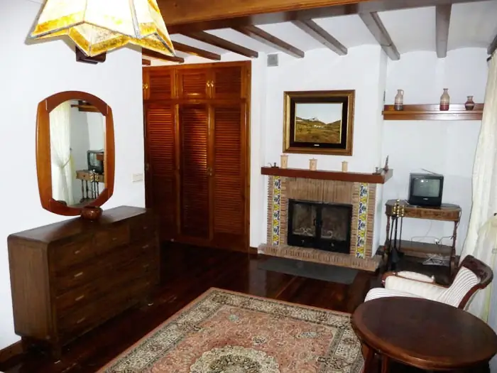
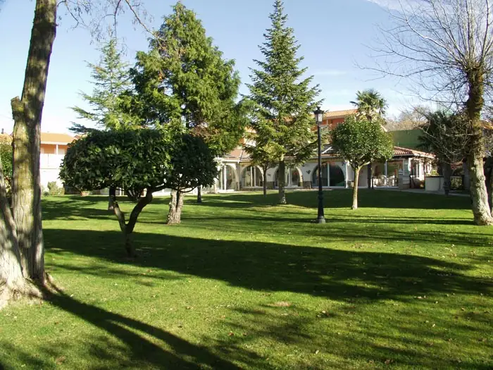
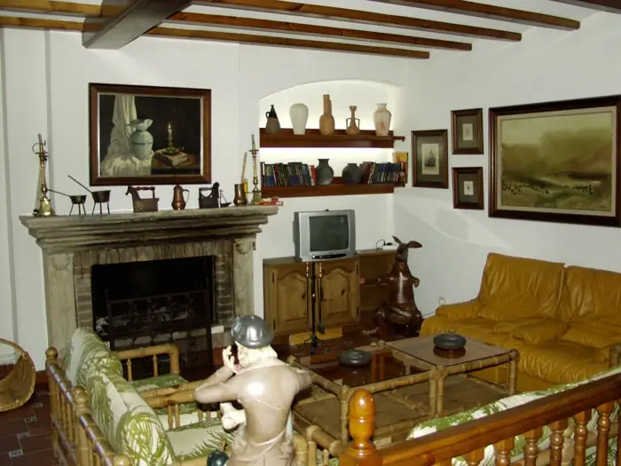
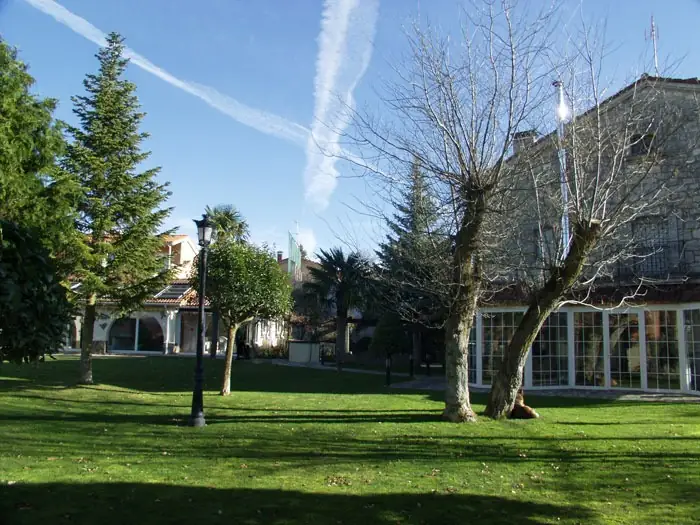
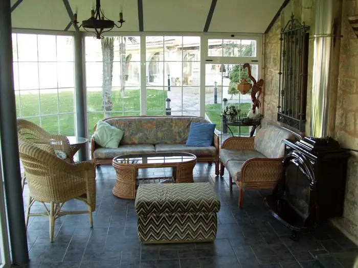
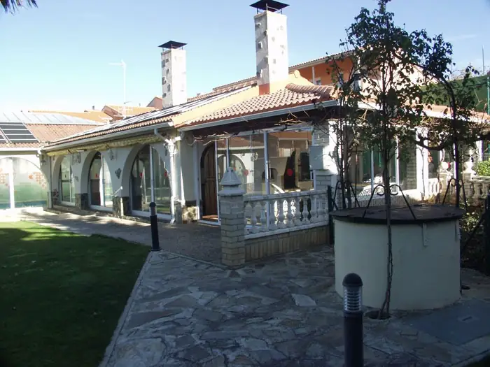
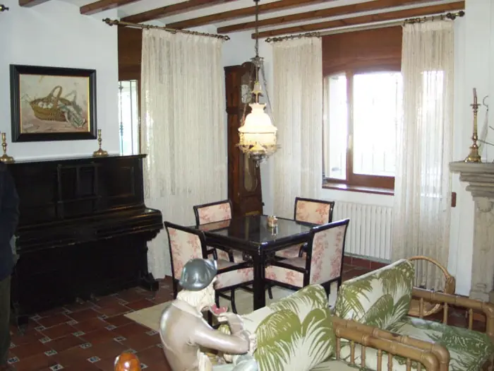
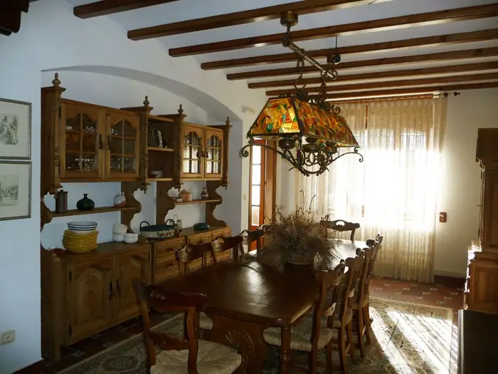
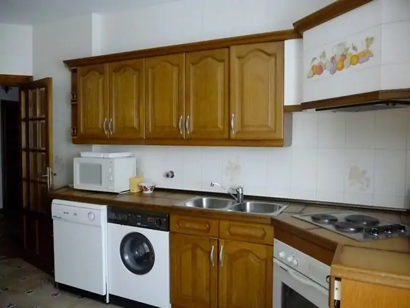
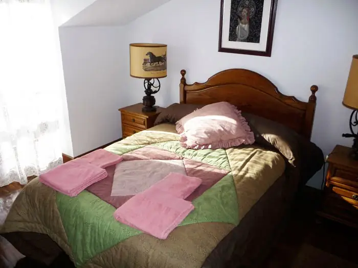
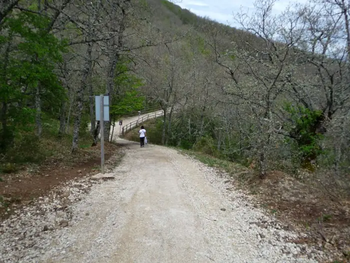
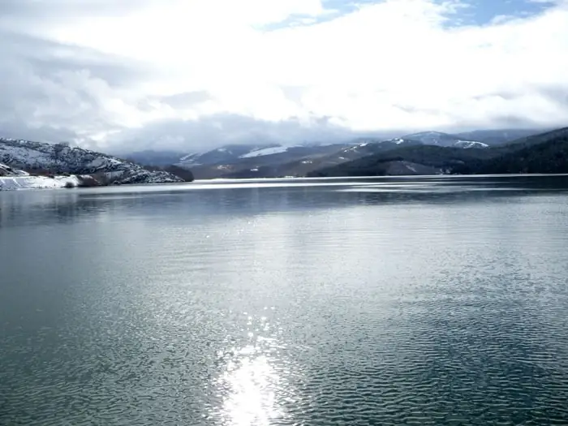
- Vía Verde de la Demanda
- Atapuerca (6 km)
- Burgos (20 km)
- Golf Riocerezo (15 km)
- Embalse de Úzquiza
- Santo Domingo de Silos
- Covarrubias
- Salas de los Infantes
C/ Samuel Morse, 29 · 09199 Arlanzón (Burgos)